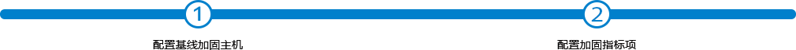

<!--主体内容-->
<div class="min-width1200 pd-10">
	<div class="bdt-box mg-10 mgb-0 bgc-white pd-10 animation-left" style="z-index: 9;">
		<p class="fs-20 pdl-10">基线加固</p>
		<div class="tc mgt-20 mgb-20"></div>
	</div>
	<div class="pd-10 clear animation-right pdb-0">
		<div class="bdb-0 configure fs-14 bgc-white mgt-0 pdt-40">
            <div class="fs-14 tc">
            	<input type="hidden" id="configure_taskId_2" name="taskId" />
                <div class="choice-box inline-block">
                    <p style="width: 100%;">指标项选择</p>
                    <ul class="choice-1 unselected">
                        <li><input type="text" placeholder="搜索" maxlength="30" class="ba-ser" style="width: 100%;"></li>
                    </ul>
                </div>
                <div class="choice-btn inline-block tc">
                    <button class="bgcolor-green add-choice">添加  &gt; </button>
                    <button class="bgcolor-green add-choice-all">添加所有</button>
                    <button class="bgcolor-orange remove-choice"> &lt; 移除</button>
                    <button class="bgcolor-orange remove-all">移除所有</button>
                </div>
                <div class="choice-box inline-block">
                    <p style="width: 100%;">已选加固指标项</p>
                    <ul class="choice-2 selected">
                    </ul>
                </div>
                <div class="choice-btn inline-block tc">
                    <button class="bgcolor-green" id="configure_setMeal_add"> &lt; 添加</button>
                    <!--<button class="bgcolor-green">添加所有</button>-->
                </div>
                <div class="choice-box inline-block" style="margin-bottom:40px">
                    <p style="width: 100%;">选择平台推荐加固方案</p>
                    <ul class="choice-1 select-set-meal">
                        <li><input type="text" placeholder="搜索" maxlength="30" class="ba-ser" style="width: 100%;"></li>
                    </ul>
                </div>
            </div>
        </div>
	</div>
</div>
<div class="dialog-btn bottom-button pd-5 tc animation-left mgt-20" style="position:fixed;">
	<a href="#none" class="button-blue" id="btn_base_configure_2_save">保存</a>
	<a class="button-green mgl-50" id="btn_base_configure_2_pre">上一步</a>
</div>
